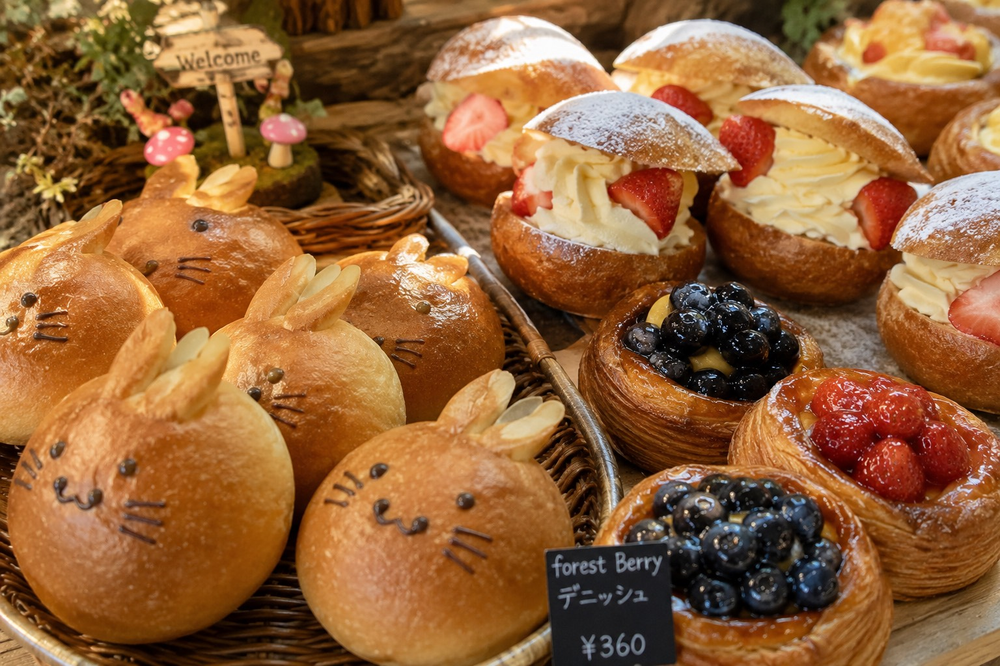

MORI NO PANYA — 森のパン屋さん
木々に囲まれた小さな窯場で、朝いちばんにパンを焼いています。小麦と水、塩、そして森からの恵みだけで作る、静かな一日のはじまり。
お店をたずねる →
店の裏手には小さな薪窯があります。毎朝、火を起こすところから一日が始まり、火が落ち着いた熾火の熱でパンをじっくり焼き上げます。
生地に使う水は近くの湧き水、香りづけには季節ごとに森で摘めるハーブや木の実を使うことも。飾らない配合で、素材そのものの味を大切にしています。
棚に並ぶ数は多くありません。その日焼ける分だけ、丁寧に。
薪をくべ、火を起こすところから一日が始まります。窯全体があたたまるまで、じっと火を育てる時間。
湧き水と塩、時間をかけて発酵させた生地を仕込みます。分量は目分量、その日の気温と相談しながら。
火が落ち着いた熾火の熱で、じっくりと焼き上げます。焼きあがる香りが、森に静かに広がります。